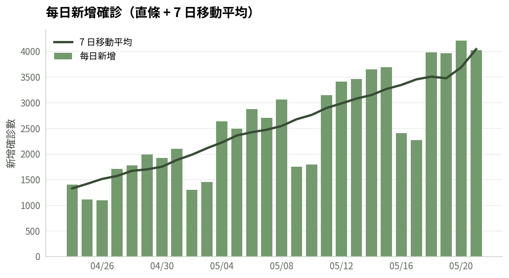
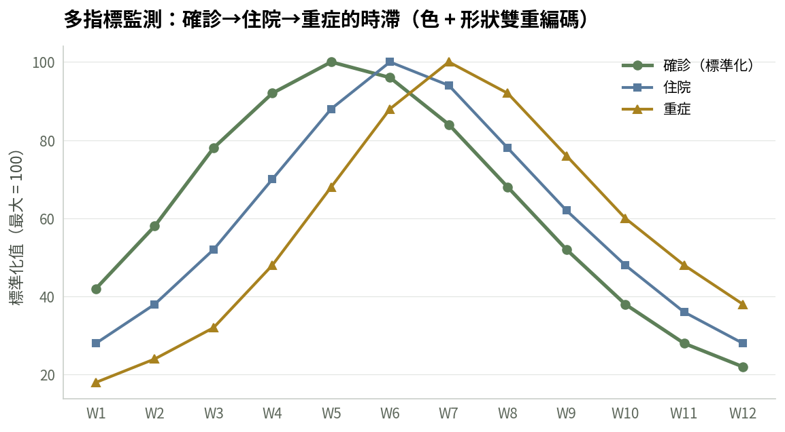
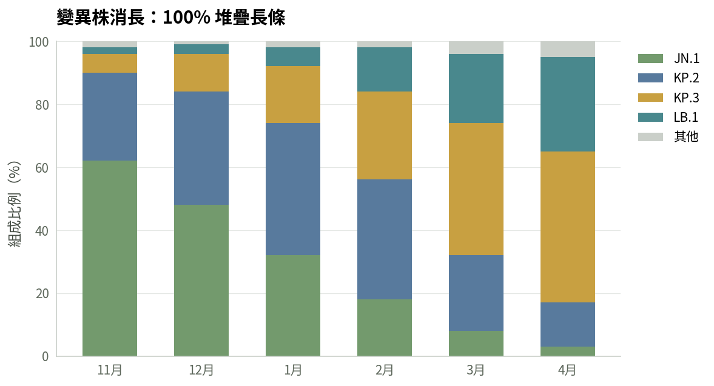
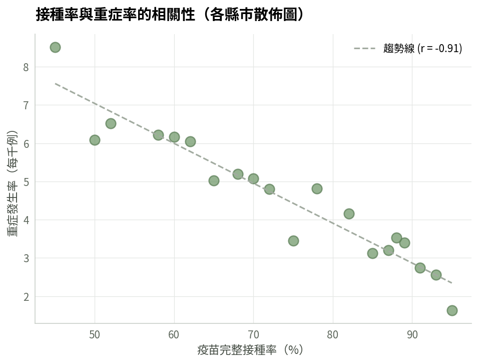
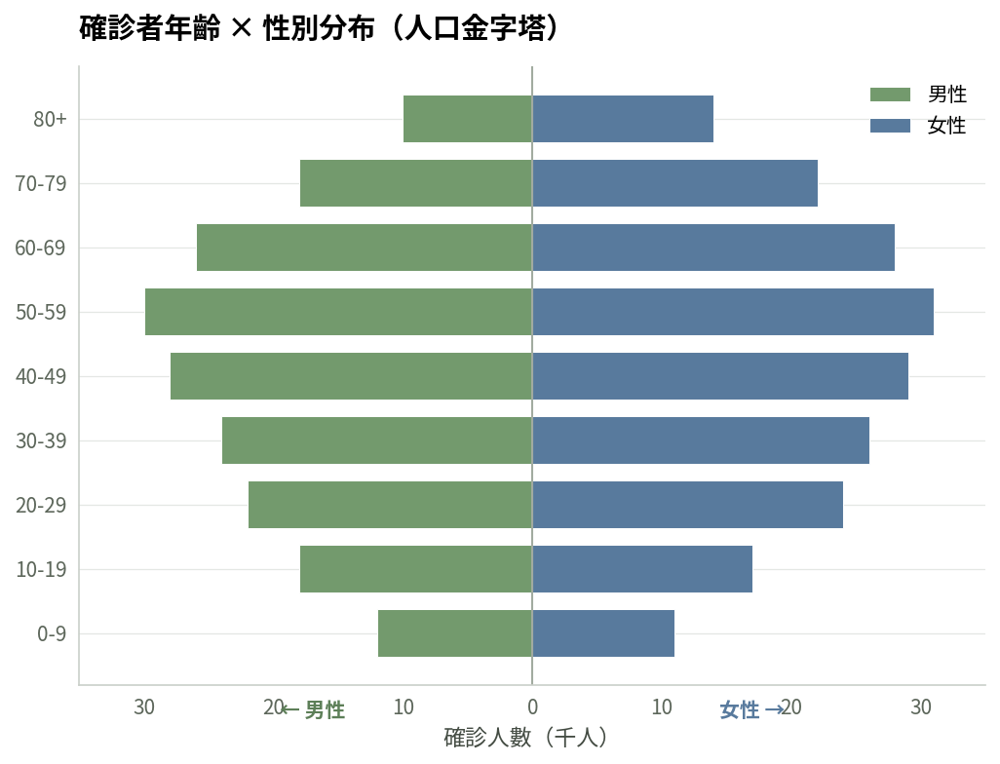
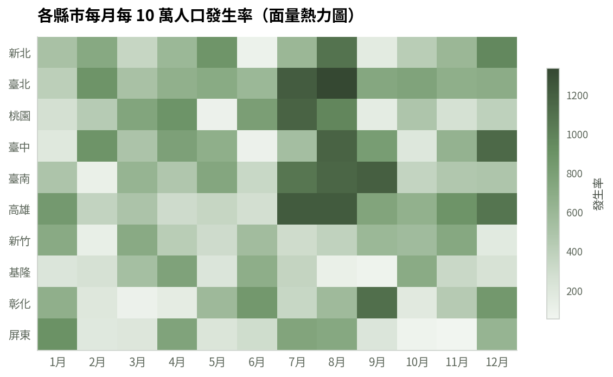
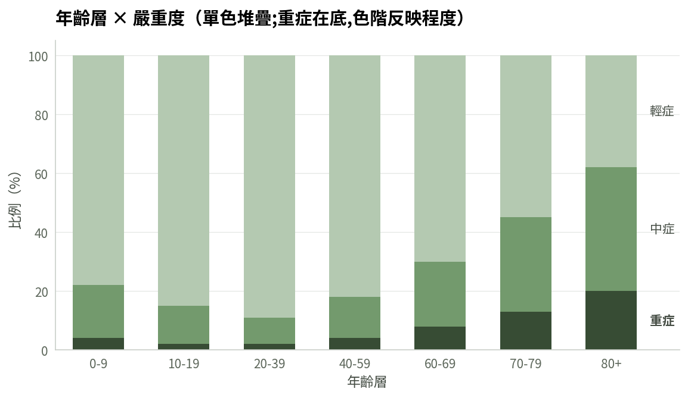
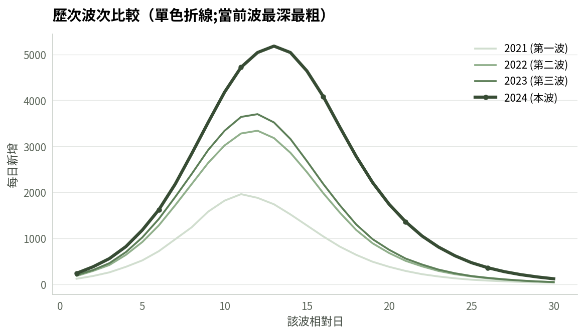

選擇你的閱讀格式
互動式網頁版
含 13 張即時繪製的範例圖表，可瀏覽器中直接互動。建議首次閱讀使用。
列印版
A4 列印優化版本，適合長官審閱、會議發放、實體存檔。
純文字版
適合在 Notion、Wiki、GitHub 等平台引用或進一步加工的純文字格式。
投影片摘要版
5 分鐘速覽 14 張投影片:4 原則、配色模式、6 條鐵則、圖表選用矩陣。適合會議簡報、長官 brief。
投影片完整版
30 分鐘完整版 22 張投影片,含序列/發散色階、MONOCHROME 6 組、trailing MA 邊界處理、工具支援等補充章節。適合內部培訓。
你想做什麼？
設計師／非工程師
在 Excel、Power BI、Tableau 等工具中製作圖表或儀表板。
AI Agent 工具用戶
在 Claude Code、Codex、Google Antigravity 等工具中自動套用本指引。
請 AI 幫你畫圖
給已安裝 skill 的 AI
你的 AI 工具已安裝本 repo 的 skill。Prompt 可以很簡短,AI 會自動讀取規範。
我有 [資料來源／附檔],內容是 [簡短說明]。 請依本組織的「疫情資料視覺化指引」幫我畫一張 [圖表類型],重點是凸顯 [訊息]。 技術需求: - 程式語言:Python(matplotlib) - 輸出:高解析度 PNG - 中文字體
給網頁 AI
網頁 AI 不會自動讀取規範,prompt 需要內嵌關鍵色彩與規則。
請依以下規範用 Python matplotlib 畫圖: 【色彩】 - 主色 Sage Green: #739A6D - 類別配色: #587A9D, #C8A041, #49888D - 紅色僅警示用,不作一般類別色 - 折線用主色加深版 #5D7F58(主色 500 對比不足) 【規範】 - Y 軸從零開始(不可截斷) - 移除頂部右側邊框 - 預設僅水平格線 - 折線寬 2.5px,長條 width=0.6 - 中文字體 Noto Sans CJK 【需求】 資料: [貼上你的資料] 我要: [簡述需求]
主色與類別配色
類別配色順序：綠 → 藍 → 黃 → 鴨綠 → 銅 → 梅
序數資料用單色色階
當序列有自然順序(嚴重度、年齡、劑次、波次), 或只有 2-3 組類別且想克制視覺, 用主色階取代類別配色,讓讀者聚焦在資料形狀而非色塊區分。
圖表範例
每日新增 + 7 日移動平均

多指標趨勢監測

變異株消長 100% 堆疊

接種率 vs. 重症率相關性

年齡 × 性別人口金字塔

縣市 × 月份發生率

年齡 × 嚴重度（單色色階）

歷次波次比較（當前波最深）

四項核心原則
清晰優先
每個視覺元素都必須服務於訊息。移除所有不傳達資訊的裝飾——3D 效果、過度網格線、不必要陰影。
誠實呈現
Y 軸從零開始；不截斷座標軸誤導比例；不刻意挑選有利時間區間。資料的真實性高於敘事的戲劇性。
一致性
同一份報告中，相同指標使用相同顏色；類別順序與配色跨頁面一致；單位、時間格式、四捨五入規則統一。
負責任溝通
疫情資料涉及公眾情緒。紅色不可濫用於一般類別配色，僅在標示警示閾值、關鍵異常時使用。色彩選擇須通過 WCAG AA 對比，並考量色覺障礙者。